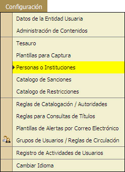
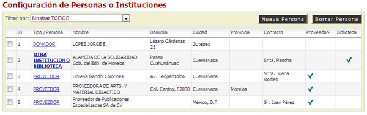
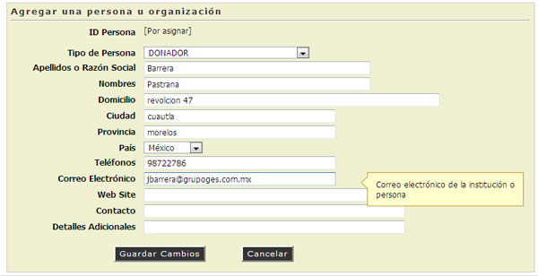
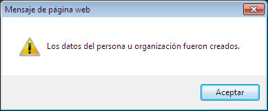
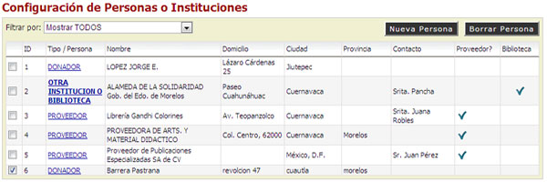
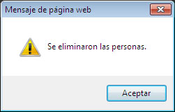
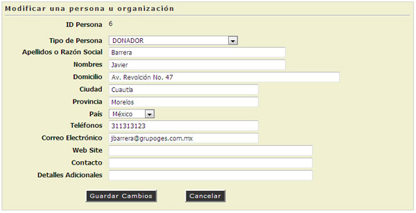
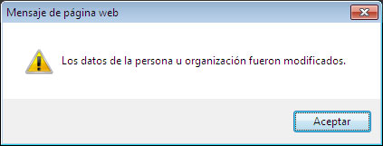

5.5. Personas o Instituciones
En esta opción el administrador del Sistema podrá Agregar, Consultar, Eiminar y Modificar los contáctos de Personas o Instituciones que mantienen comunicación con la Biblioteca.

<AGREGAR NUEVA PERSONA O INSTITUCIÓN>
- El sistema mostrará un filtrado de contactos de Personas, Instituciones u Otros.
- Hacer "Clic" en el botón Nueva Persona.

- Se mostrará un cuadro de diálogo mostrando los datos requeridos de contacto.

- Seleccionar el Tipo de Persona.
- Donador.
- Otra Institución o Biblioteca.
- Proveedor.
- Escribir Apellidos de la Persona o Razón Social de la Institución.
- Escribir Domicilio de la Persona o de la Institución.
- Escribir la Ciudad.
- Escribir la Provincia.
- "Seleccionar" el País.
- Escribir los Teléfonos de contacto.
- Escribir el E-mail de contacto.
- Escribir el Sitio Web de la Institución.
- Escribir e Nombre de la Persona con la que se puede intercambiar infromación.
- Escribir Notas importates o de interes.
- Hacer "Clic" en la opción [Guardar Cambios].
- Mensaje de Alerta los Datos han sido Guardados.

<BORRAR PERSONA O INSTITUCIÓN>
- El sistema mostrará un filtrado de contactos de Personas, Instituciones u Otros.
- "Seleccionar" la casilla de la Persona o Institución que se va a eliminar.

- hacer "Clic" en la opción [Borrar Persona].
- Mensaje de Confirmación, Hacer "Clic" en la opción [Aceptar].

<MODIFICAR LA PERSONA O INSTITUCIÓN>
- El sistema mostrará un filtrado de contactos de Personas, Instituciones u Otros.
- Hacer "Clic" en el Nombre de la Persona o Institución.
- Mostrará un cuadro de diálogo, modifcar los datos requeridos.

- Hacer "Clic" en la opción [Guardar cambios].
- Mensaje de Alerta los Datos han sido Guardados.
